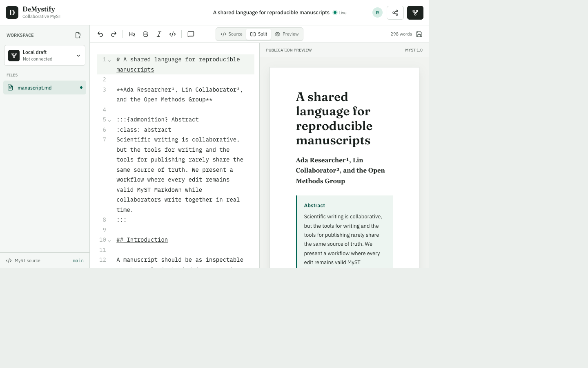

DeMystify
Real-time collaborative editing for scientific manuscripts that keeps MyST Markdown readable and GitHub reviewable.

Scientific teams should not have to choose between a manuscript that is easy to edit together and one that is reproducible, structured, and ready to publish.
Live drafting, deliberate Git history
GitHub stores reviewed versions. Yjs handles the keystrokes between them.
-
1
Connect
A repository owner installs the narrowly scoped DeMystify GitHub App.
-
2
Write
Maintainers edit shared MyST; invited reviewers submit attributed Source or Visual proposals; viewers follow read-only.
-
3
Snapshot
The first snapshot creates a stable working branch and draft pull request.
-
4
Review
Later snapshots update the same review; tests and MyST builds remain the publication gate.
No document-format round trip
Equations, directives, figures, citations, tables, and readable source are not flattened into another format. The browser preview is fast and debounced; repository CI remains authoritative.
:::{figure} ./images/result.svg
:label: fig-result
:alt: Description of the scientific result
Caption with methods, units, and provenance.
:::A collaboration layer, not a new source of truth
IdentityGitHub OAuth for maintainers; optional verified identity for invited guests
PreviewFast browser MyST render; repository CI remains authoritative
AccessRepository checks for maintainers; revocable capability grants for invited roles
Scoped access. Selected repositories. No personal tokens.
The deployment model uses a GitHub App with read/write contents and pull-request permissions plus read-only metadata. Maintainer authorization remains server-side, and repository access is rechecked on claims, HTTP mutations, and WebSocket reconnects; established sockets are not continuously reauthorized. Suggestion and viewer access use independent, revocable links with configurable expiration.
A tested MVP packaged for a controlled pilot
The tested MVP supports simultaneous multi-file source editing, presence, anchored comments, attributed Visual suggestions with maintainer decisions, citations, publication metadata, MyST and KaTeX preview, persistence, GitHub project loading, branch snapshots, and pull-request review records.
Pilot boundary: DeMystify is not approved for confidential or regulated manuscripts. Use only synthetic or explicitly approved non-sensitive content in the public pilot.
Working now
- Conflict-free concurrent editing
- Shared presence, comments, and attributed suggestions
- GitHub App OAuth gateway
- Repository-authorized WebSocket rooms
- Shared PostgreSQL persistence
- Single-instance Cloud Run packaging
- Multi-file projects, references, and metadata
- Responsive manuscript workspace
Production gate
- Repository GitHub Actions status and artifact links
- Multi-instance WebSocket fan-out
- Backups and tested restoration
- Rate limits and security-header review
- Metrics, alerting, and service ownership
- Audit, retention, and incident controls